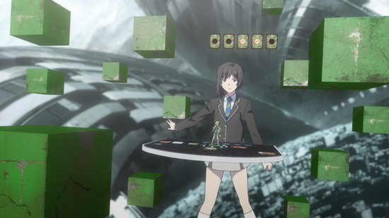
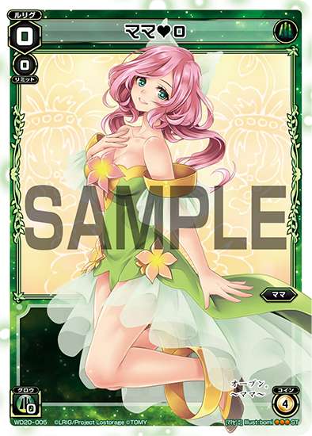

「Lostorage incited WIXOSS」
Column of episode 02
Episode 2 Aired!
Today (10/21) episode 3 will be airing. What did you all think of episode 2? Here is the protagonist of episode 2! It's Chinatsu-san.
She was only trying to take a breather
Very happy she got to see Chii-chan
Yes, and if you buy Green Berserk now you'll be able to get Mel without any demerits!
The Mysterious Girl
She appears to be very skilled. Mel and Chinatsu lose their battle without even a single cut shown.
Chinatsu studies so that she won't lose any more battles. When you Accessorize Code Order Stek and Teaksauce, they get the perfect Shadow defense.
{TL Note: While Stek gets a Shadow-like effect, it doesn't technically have that keyword like Nanashi's Signi}
You can see that even girls who battle alone can become Selectors.
And if you want to see how those girls have fun every day, read the manga Selector infected Wixoss Mayu's Room, on sale 10/19. Click the link below!
I wonder if the pillow in this advertisement will let you sleep peacefully
She even studies from the Wixoss Card Encyclopedia which seems like it has everything you could every want to know (link below).
The Wixoss Encyclopedia is very popular at Hobby Japan
The pillow company advertising on the back must really be trying to get a particular niche of buyers
Oh, could it be?
Yes, it says "Doctor Hanna" right there! And in front of her stands the Wixoss beginner, Suzuko. How studious of her. It's no surprise she refuses to battle Hanna when she has such a disadvantage. You can't start a battle unless both sides shout Open.
Battle: Yukime vs Mel
When do you work until? Do you want to have a battle with me?!
Kagari comes by asking her as naturally as inviting someone out for a drink after work. She seems like she'll be a good boss one day.
This is Yukime-chan. She's a traditional Japanese LRIG
A frontal attack like she read in the book!!
Coin Bet! Predict!
Her ability is to "Look at the cards your opponent adds to her hand"
Because Kagari's a simple and naive girl, her LRIG Yukime acts as her escort. She's very calm and mature. You need to be careful picking which LRIG you want as your partner for times like this.
After that, Chinatsu summoned two Ketch's, making a perfect lineup of exactly the same Power.
Servant D and two Ketch on the field.
As a result, Triplet Flame Stomp was able to burn her side to a crisp. Thus she can only attack with Mel. After that, Chinatsu focused too much on frontal attacks, and because she was thrown off by having her draws revealed she was defeated.
Isn't this just a game?
Yes, Wixoss is a passionate strategy trading card game! For those of you watching the anime and coming to this column for the first time, please watch the videos below and learn all about the flow of battles!
After that, she was fired from her job, her rank in the proficiency exam dropped, and her father was used at his job. (*It is definitely not Wixoss's fault)
An unprecedented boy with a card in his breast pocket
Battle: Mama vs Mel
And then she appeared, the youngest Selector, Oshiba Rio-chan!
Please battle me!
What would you do if an elementary school girl challenged you to Wixoss? Please think about it now before it's too late.
Chinatsu, at the end of the line, had no choice but to Open! This is what both of their starting hands looked like.
Roulette: "The unexpected green mirror matchup!"
Chinatsu goes first.
In Wixoss, the person who goes first can't attack. She plays a Signi and ends her turn.
 The LRIG "Mama" uses Wisdom Signi
The LRIG "Mama" uses Wisdom Signi
Then on Mama and Rio's turn they also do not attack. How careless of them.
Well, we'll just attack you then.
As you'd expect from the start, the field seems to favor Accessorizing as she goes on the attack. Even if they get banished, they'll soon be back as Accessories to be useful.
An innocent Bet! Cunning GOOD!
Rio undauntedly expends a coin, activating Mama's ability of Cunning. Cunning means to trick or be sly. Her ability allows her to "plant a bomb on your Signi"! It's scary to think of what the future holds for an elementary schooler who can bluff someone into a counter attack. This Cunning Mama will be on sale this December, so look forward to it!
A big attack!
This is the field now. She attacked with Ferma and Descart.
Chinatsu's head begins spinning with her memories.
I... don't want it to end!!
Bet!
She finally crossed the line.
"Berserk"
Let's imagine what happened after that by looking at her ability!

Rio's eyes changed color. What became of this elementary school girl?
Is this the world of adults...?
The sobbing Rio-chan has a 99% chance of only playing older people even after this. However, this is one of the good points of card games. Wixoss may be an adult-oriented card game, but Duel Masters and similar are targeted at children yet have well made game systems which even adults can enjoy. At their events there may even be elementary schoolers vs adults! You'll see that every once in a while. (Also, the adults even lose sometimes)
Card games really are quite impressive to overcome the generation gap and allow for this kind of communication. I hope Rio-chan keeps on trying her best so that more children will play Wixoss.
About Wisdom
Mama uses Wisdom Signi.

On sale 12/15, Level 0 Mama from Green Cunning
Now then, since we're on the topic, let's discuss its gimmick a bit!
Wisdom Signi:
1) Can attack the adjacent Signi zones
From the popular Incited Selector now on sale
2) Have skills that depend on the sum of the levels of Signi in play
From Green Cunning on sale 12/15
[Continuous: Wisdom=7 This Signi cannot be banished.]
Those are their traits.
When cards with this icon are on the field, their abilities activate when the sum level of Signi of the corresponding type exactly match the number. The above #Sanjou# (Cube) is a Wisdom level 3, so when there are two other Level 2 cards in play the ability activates. Don't you think that having to do addition like that befits the Wisdom name?
Now, what girl will make an appearance in episode 3?! Look forward to it!